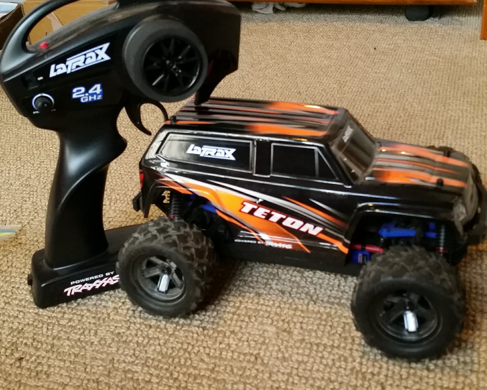
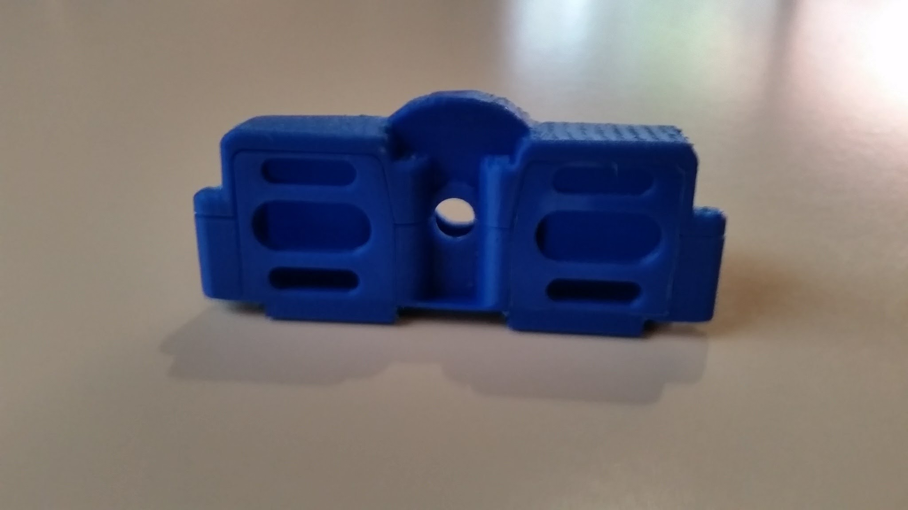
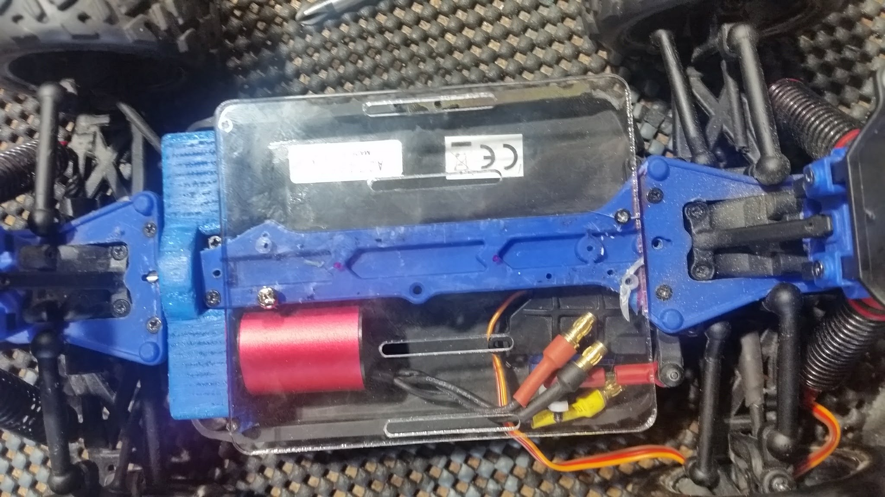
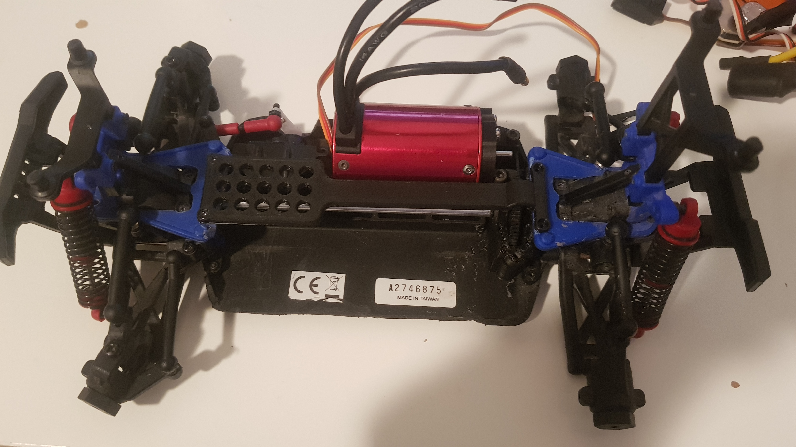
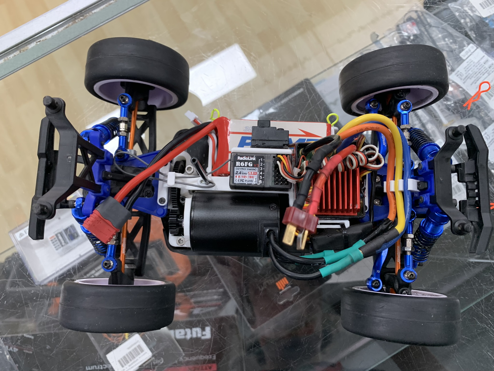

LaTrax Teton - Pushing the Limits of a 1/18 Scale RC Car (2018–2023)
Project overview
The LaTrax Teton is a small 1/18 scale RC car designed for beginners. In 2018, I designed a twin motor mount and laser cut battery tray. I revisted the project in 2021 and 2023, designing a motor mount to fit a huge 1/10 motor, along with other upgrades. The result was a tiny RC car too fast for its own good.
1 / 6
The LaTrax Teton was aimed at beginners and came with a brushed power system that was plenty powerful for the car's size. However "plenty" wasn't enough to satisfy me and thus, the journey to find "how much is too much" began.

2 / 6
In 2018, I designed and 3D printed a new motor mount that could fit an extra motor on the opposing side.

3 / 6
Along with the motor mount, I also laser cut a battery mount to relocate the batteries to the top deck and allow room for the second power system.

4 / 6
The second power system was never fitted in the car, however in 2021 I happened to have a spare 1/10 power system and began designing a new mount to fit it. This system was far too big for this car, thus making it a perfect choice.

5 / 6
I revisited the project in 2023, finishing the car with a many custom 3D printed parts and aftermarket upgrades. The car was now equipped with a 4000kv 540 brushless motor and was running on 3S.

6 / 6
Despite having an onboard gyro, the car was (expectedly) completely uncontrollable. It was also very, very fast.